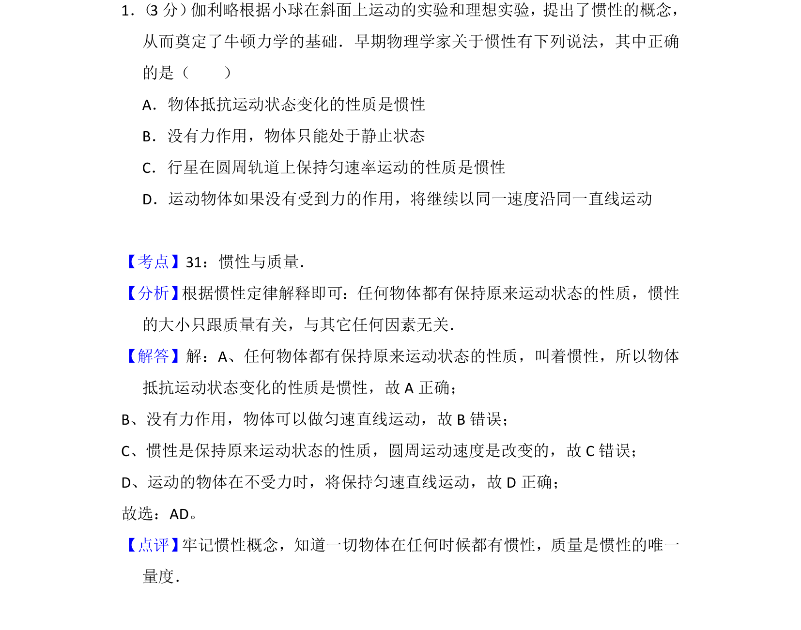
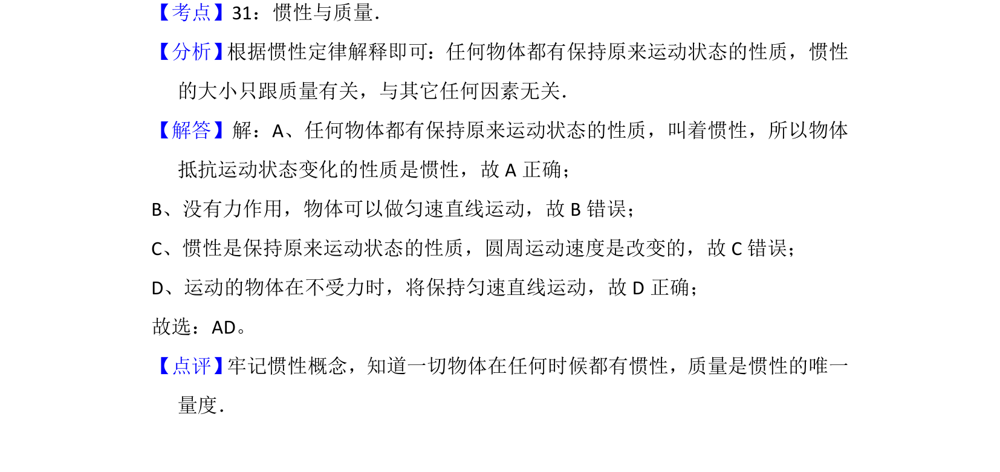

考点：惯性 牛顿第一定律 运动状态

该题考查惯性的概念及牛顿第一定律的应用，判断物体运动状态变化的性质。

📄 原 PDF 第 1 页：
素材/真题/吉林/2008-2024·（吉林）物理高考真题/2012年高考物理试卷（新课标）（解析卷）.pdf
1． （3分） 伽利略根据小球在斜面上运动的实验和理想实验，提出了惯性的概念， 从而奠定了牛顿力学的基础．早期物理学家关于惯性有下列说法，其中正确 的是（ ） A．物体抵抗运动状态变化的性质是惯性 B．没有力作用，物体只能处于静止状态 C．行星在圆周轨道上保持匀速率运动的性质是惯性 D．运动物体如果没有受到力的作用，将继续以同一速度沿同一直线运动
【考点】31：惯性与质量．菁优网版权所有 【分析】 根据惯性定律解释即可：任何物体都有保持原来运动状态的性质，惯性 的大小只跟质量有关，与其它任何因素无关． 【解答】解：A、任何物体都有保持原来运动状态的性质，叫着惯性，所以物体 抵抗运动状态变化的性质是惯性，故A正确； B、没有力作用，物体可以做匀速直线运动，故B错误； C、惯性是保持原来运动状态的性质，圆周运动速度是改变的，故C错误； D、运动的物体在不受力时，将保持匀速直线运动，故D正确； 故选：AD。 【点评】 牢记惯性概念，知道一切物体在任何时候都有惯性，质量是惯性的唯一 量度．